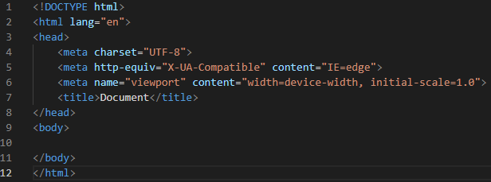

Kas ir HTML?
HTML, jeb HyperText Markup Language ir vienkāršākā un parastākā valoda, kas tiek izmantota mājaslapu taisīšanai.
Kā izskatās HTML dokuments?

<'!DOCTYPE HTML> Paskaidro kāda formāta dokuments tiek izmantots.
<'html> Tiek apzīmēts, lai definētu HTML dokumenta sakni, kā arī pārlūkprogrammai norāda, ka tas ir HTML dokuments.
<'head> Šeit tiek ievietota informācija saistībā ar dokumentu. Kas šeit tiek ievietots nebūs redzams.
<'body> Šeit tiek ievietota redzamā daļa no HTML dokumenta, kas tiks parādīta uz lapas.